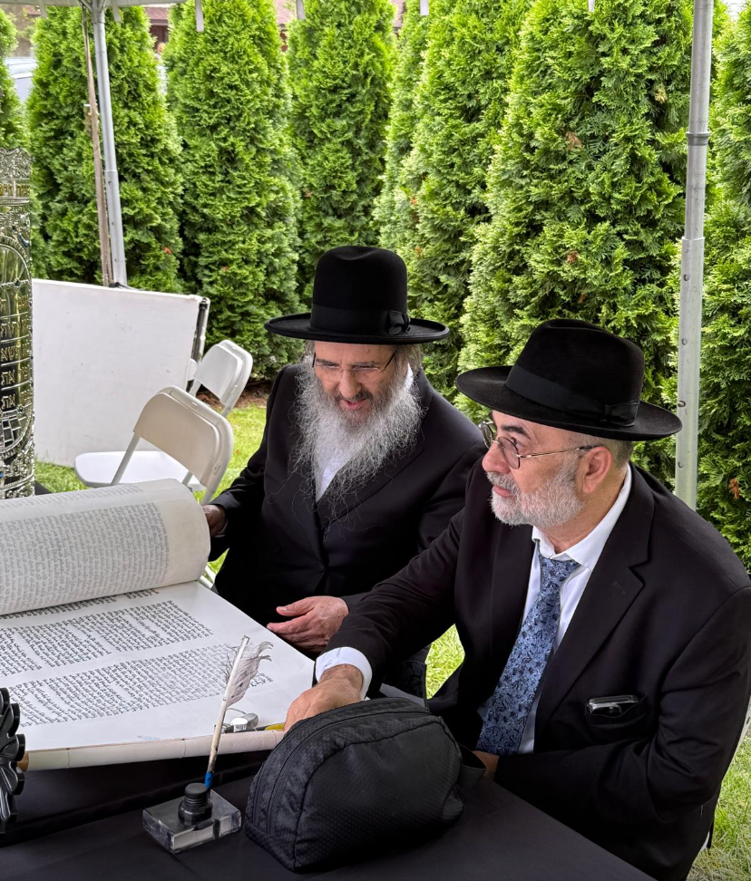
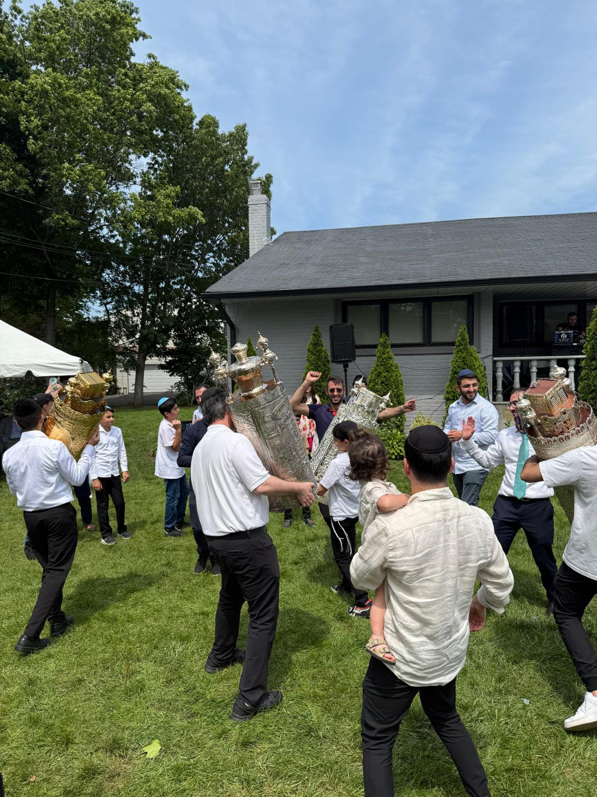

- Mon-Fri Shacharit
- 6:00 AM
- Sunday Shacharit
- 7:45 AM
- Daily Mincha & Arvit
- 7:15 PM
Kehilat Shaare Shalom
Woodmere, New York
Regular minyanim, Shabbat programs, local resources, address, contact, and payment information in one place.
Rabbi David Rubinoff
22 Andover Lane
ksswoodmere@gmail.com

Location
22 Andover Lane - Rear entrance
Next Regular Minyan
Calculating...
Weekly Bulletin
Loading schedule...
- Ben Ish Hai
- 8:00 AM
- Kids Program
- 5:15 PM
- Ladies Tehillim & Brachot
- 6:00 PM
- Kiddush
- Shabbat AM
- Seuda Shlishit
- Shabbat PM
- Monday Night Learning
- Weekly

Rabbi
Rabbi David Rubinoff, Shlita
Rabbi of Kehilat Shaare Shalom. Shabbat announcements, shiurim, and schedule changes are shared by the shul.
Minyan Schedule
Regular Tefillah Times
Regular prayer times for the Woodmere Sephardic community.
This Week
Monday-Friday
Shacharit
6:00 AMSunday
Shacharit
7:45 AMDaily
Mincha & Arvit
7:15 PMFriday Night
- Lighting
- Live weekly
- Shir Hashirim
- 7:00 PM
- Mincha & Kabbalat Shabbat
- 7:15 PM
- Shkia
- Live weekly
- Tzeit HaKochavim
- Live weekly
Shabbat Morning
- Ben Ish Hai Class
- 8:00 AM
- Shacharit - Korbanot
- 8:30 AM
- Shacharit - Hodu
- 8:45 AM
- Latest Shema M"A
- Live weekly
- Latest Shema Gr"A
- Live weekly
- Rabbi's Morning Speech
- 10:50 AM
Shabbat Afternoon
- Chazot
- Live weekly
- Kids Program with Avi
- 5:15 PM
- Ladies Tehillim & Brachot
- 6:00 PM
- Parsha Shiur
- 6:45 PM
- Mincha
- 7:15 PM
- Arvit
- 8:30 PM
- Shabbat Ends
- Live weekly
- Rabbenu Tam
- Live weekly
Woodmere Zmanim
Today's Halachic Times
Loading live zmanim from Hebcal...
Torah Learning
Learning Schedule
Regular learning opportunities are listed here. Weekly changes and special shiurim are announced by the shul.
Learning with Food
Monday night learning includes food. Exact start time and topic are announced by the shul.
Ben Ish Hai Class
Ben Ish Hai class is held Shabbat morning at 8:00 AM.
Ladies Tehillim & Brachot
Ladies Tehillim and Brachot Party is held Shabbat afternoon at 6:00 PM.
Parsha Shiur
Parsha Shiur is held Shabbat afternoon at 6:45 PM.
Shabbat and Events
Regular Community Information
Kiddush
Held after Shabbat morning tefillah. Sponsorship and dedication information is announced by the shul.
Seuda Shlishit
Held Shabbat afternoon after Mincha, with food and Torah before Arvit.
Families Welcome
Kids program with Avi is held Shabbat afternoon at 5:15 PM.
Ladies Tehillim & Brachot
Held Shabbat afternoon at 6:00 PM.
Visitor Information
Before Coming
Basic details for members, guests, and people visiting for minyan or Shabbat.
Use the rear entrance at 22 Andover Lane in Woodmere.
Shabbat times and special announcements are shared weekly by the shul.
Kids program with Avi is usually held Shabbat afternoon at 5:15 PM, with family-friendly programming when available.
Local Resources
For Shabbat Guests and Visitors
Helpful Woodmere and Five Towns links. Please verify hours and status directly before relying on them.
Five Towns Eruv
Check the local eruv before Shabbat. The map notes areas and exceptions that require care.
View Eruv MapCong. Mikvah South Shore
1156 Peninsula Blvd.
Hewlett, NY
516-569-5514
Also has a separate mikvah for keilim.
Far Rockaway/Lawrence Mikvah
1121A Sage Street
Far Rockaway, NY
718-327-9727
Also has a separate mikvah for keilim.
Grove Street Mikvah
134 Grove Ave.
Cedarhurst, NY 11516
516-699-2000
Women's mikvah only.
Inwood Mikvah
76 Roosevelt Ave.
Inwood, NY 11096
516-231-8000
Also has a separate mikvah for keilim.
Payment Information
Donation / Payment by Zelle
Use Zelle for donations, balances, Kiddush, Seuda Shlishit, and other shul payments. Please include a short memo so the payment can be recorded correctly.
Zelle
ksswoodmere@gmail.com
Memo examples: Kiddush, Seuda Shlishit, Balance, Donation
Address
22 Andover Lane, Woodmere
Use the rear entrance. For questions about times or events, email the shul.
Directions
22 Andover Lane
Open directions in your preferred maps app. Use the rear entrance when arriving.